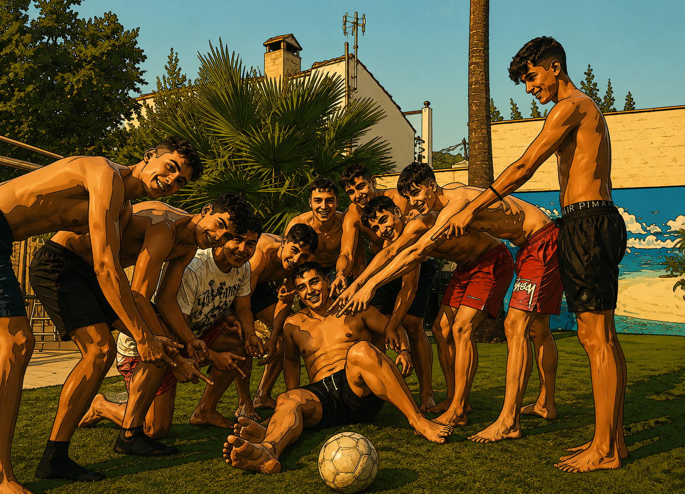

Últimas noticias
Lo último de la liga: MVPs, previas de jornada y los highlights recién subidos.

Susto de Paco
Tras una acción de remate, nuestro compañero y jugador Paco sufrió una contusión en su dedo del pie del cual se lesionó de gravedad, los médicos se esperaban una recaída pero gracias a dios no fue nada y se quedó solo en un susto.

#FuerzaPaco: vuelve a los terrenos de juego en la jornada 8
Tras los reconocimientos médicos por su fractura en el dedo del pie, Paco ha estado 2 jornadas de baja y sufrió una recaída que le costó otra jornada más. Los médicos estiman que su lesión estará superada y podrá volver a jugar en la jornada 8.
¡¡ SANCIÓN de 3 Partidos !!
Tras el incidente ocurrido con el jugador Alvaro Marín, toda la junta directiva de la champiñon league ha decidido imponer un sanción de 3 jornadas en consecuencia a su enfado y más motivos por el cuál no podrá participar hasta la jornada 10, dejandolo asi casi definitivamente fuera del balón de oro.
Actualización del parte médico de Lucas
Tras su lesión en la jornada 5 hecha por el carnicero de Pablo Orejuelas, los médicos han dictaminado una jornada más de lesión debido a el miedo a una posible recaída, convirtiéndose así en su 3º jornada de ausencia.